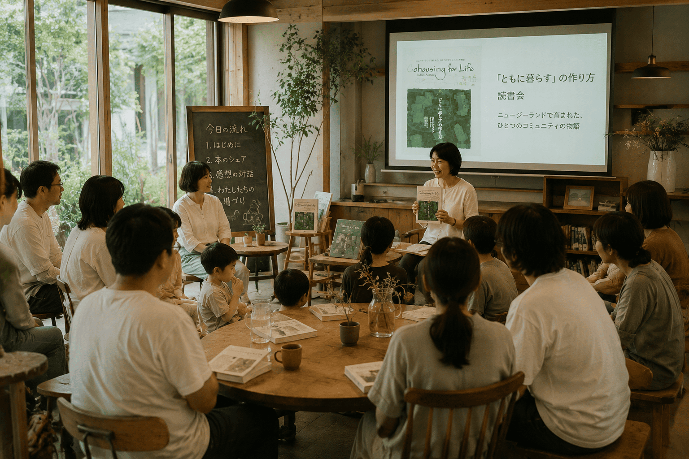
読書会・勉強会
書籍『「ともに暮らす」の作り方』を囲み、ニュージーランドで育まれた共生・共助の知恵を、ともに読み解き、語り合います。
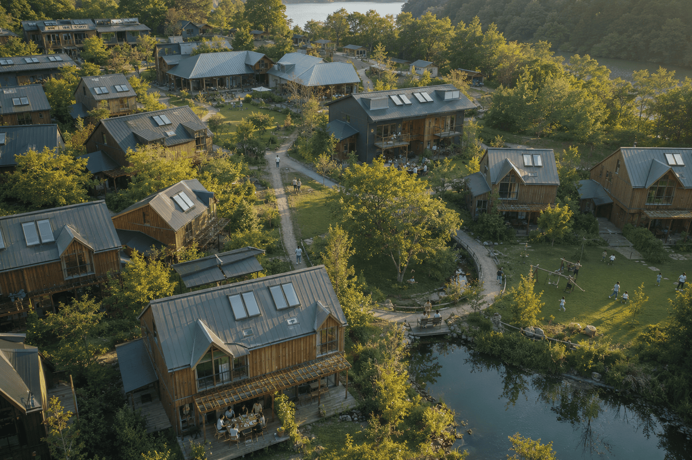
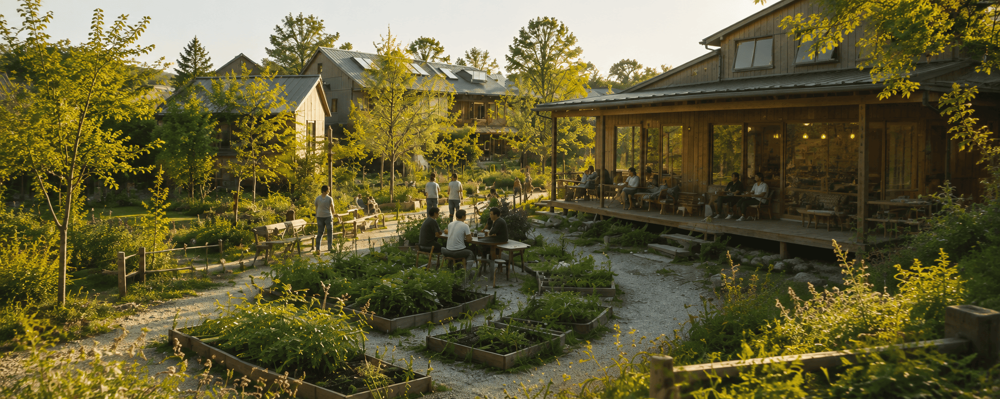
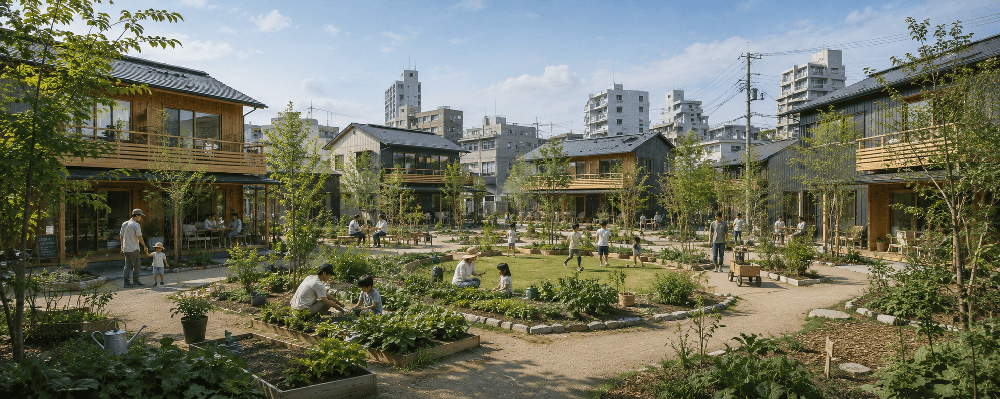
Cohousing for Life
Purpose
現代社会では、単身世帯の増加や地域コミュニティの希薄化により、人と人とのつながりが弱まり、孤立や分断が社会課題となっています。一方で、日本には古くから「ご縁」「助け合い」「分かち合い」の文化が息づいてきました。私たち「一般社団法人 ともに生きる実践ラボ」は、この文化をいまの社会にふさわしい形へと編みなおし、人と人が関係性を深め、自然の循環と調和しながら暮らしを育む——人・地域・自然が支え合う「ともに生きる社会」の実現を目指して設立しました。
現代における人とのつながりの減少や孤立は、気まずさ、すれ違い、話し合いの面倒くささを避け続けた結果なのかもしれません。いま必要なのは、「人と関わること」——関係性がもたらす不確実さを引き受ける勇気と知恵だとしたら。目の前の不安や違和感は、希望の種ともいえるのではないでしょうか。
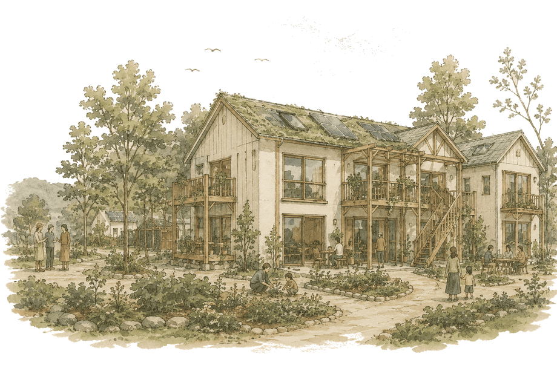
Philosophy
そのフィロソフィーを支えるのが、コミュニティ・コミュニケーション・コモンズという3つの要素です。
——自然のはたらきになぞらえた3つの要素が、ゆるやかに結びあいます。
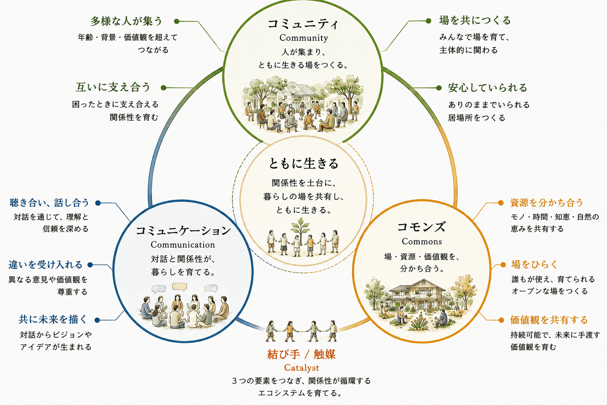
TOMOIKI フィロソフィーを支える、これら3つの要素のあいだに立つ「結び手」「触媒」として、
"ともに生きる"を問い、試み、分かち合う。
——Research & Development（研究・開発）を通じて、新しい共生のかたちを育てていきます。
だれもが「ともに生きる」の一歩を踏み出せる。
そんな共生のかたちを、ともにつくっていきます。
The Origin
私たちの活動の原点は、一冊の本にあります。
『「ともに暮らす」の作り方 ——ニュージーランドで育まれた、ひとつのコミュニティの物語』（原題：Cohousing for Life）
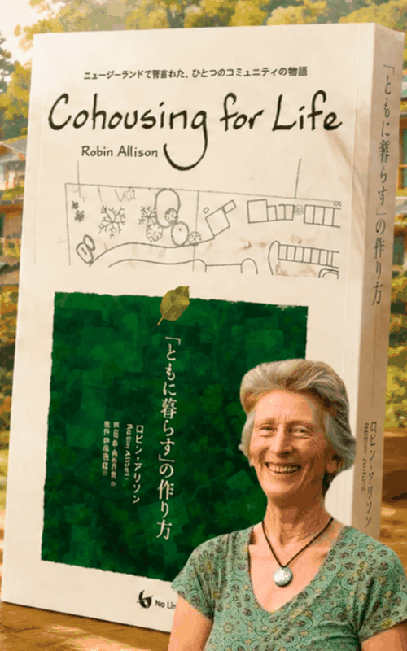
2020年にニューランドで原著が刊行、いよいよ2026年。翻訳版が出版されます！
ニュージーランド・オークランド郊外に、アースソング（Earthsong Eco-Neighbourhood）というコウハウジング（住人たちが主体となってつくる協同型の住まいモデルのひとつ）があります。著者ロビン・アリソンは、その創設者。1995年、たった一人の想いから始まったこのプロジェクトは、30年以上たつ現在も、32戸のエコホームからなる共同体として運営が続いています。世界6,000超のサステナブル・コミュニティが加盟する Global Ecovillage Network（GEN）が認知する代表的事例のひとつであり、国際的なコウハウジング／エコビレッジ運動の原典としての位置づけが確立しています。
アースソングの壮大なプロジェクトは、たった一人の、こんな想いから生まれました。
「わたしがそこにいることが、地球にとって健やかで、めぐみとなる関係でありたい。人とともに暮らしながらも、ひとりの時間や自分らしさが脅かされることはなく、それでいて、人とふれあい、つながる機会には、いつでも気軽に手をのばせる——そんな場所。さまざまな世代の人、さまざまな文化の人と、隣り合って暮らしたい。そのコミュニティが、大人にとっても、お年寄りにとっても、子どもにとっても、そして見過ごされがちなティーンエイジャーにとっても、末永く居心地のよい場所であってほしい。」
アースソングが稀有なのは、コウハウジング（個と共同体の共存）を軸に、パーマカルチャー、そして教育を編み込みながら、設計から建築までを住民自身が推進し、実現させたこと。だから本書には、「ともに生きる」を実現するための、多様な実践知が織り込まれています。
本書のもうひとつの魅力は、その構成にあります。全15章が「テーマ章（思想・手法）」と「ストーリー章（実践の物語）」の交互で編まれており、理論と実体験が一章ごとに往復します。
ビジョンの策定、合意形成、リーダーシップと権力、資金調達、法的構造——テーマ章で語られる知見は、コウハウジングに限らず、あらゆるプロジェクトの推進に通じるものです。そしてストーリー章では、理想と現実のあいだで揺れる人間の葛藤、仲間との対立と和解、何度も訪れる挫折と、それでも手放さなかった一人の意志が、生々しく描かれています。
本書は、住まいをつくりたい人だけのものではありません。「まだ世の中にないものを、仲間とともに実現したい」と願うすべての人にとっての実践書です。
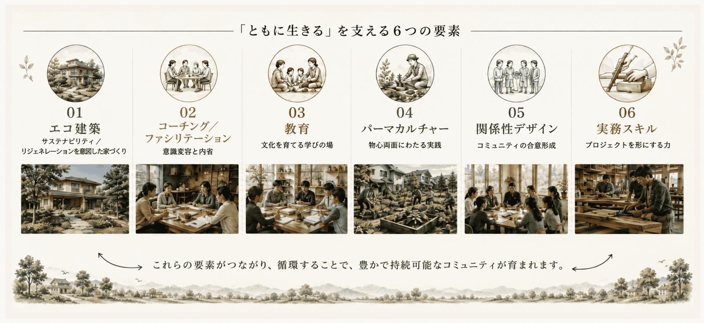
分断と孤立が深まる、2026年。本書が、日本に届きます。
かつて長屋の暮らしにあったように、共生・共助は、この国にとって当たり前のものでした。その精神を今こそ思い出し、一つの実践知に触れながら、新たな共生のかたちを育てたい。私たちは、2026年を「ともに生きる元年」と定めることにしました。
ここから、文化づくりのムーブメントが始まります。
Doorways
暮らしをともにしてもいいし、しなくてもいい。あなたに合った、はじめの一歩から。
「ともに生きる」を分かち合う——そんな気軽な場を、仕込み中。

書籍『「ともに暮らす」の作り方』を囲み、ニュージーランドで育まれた共生・共助の知恵を、ともに読み解き、語り合います。
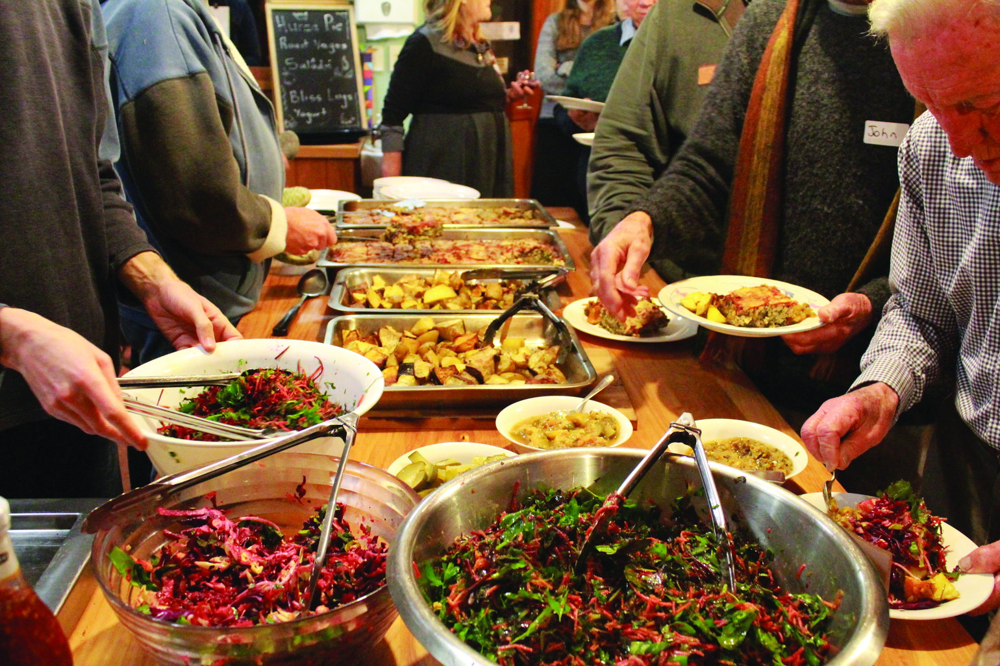
ともに作り、一緒に食べる。同じ食卓を囲むことから、関係は始まります。
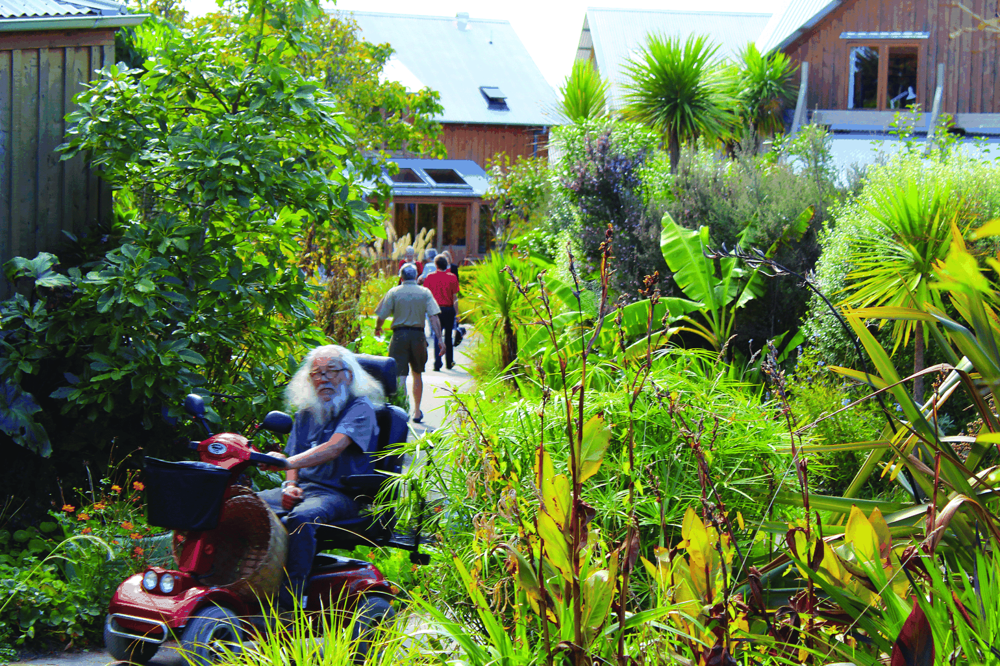
多世代型共同住宅コレクティブハウスなど、実際の暮らしの場を訪ね、体感する。
このほかにも、実践地へのエクスカーション、合意形成のワークショップ、寺子屋体験、シェアハウス・コレクティブハウスまで——ゆるやかに深めていける、いくつもの入口を用意していきます。
歩きながら、あなたの"ともに生きる"のカタチが見えてきます。
The PlatformTO B
そして、この小さな実践を、日本中の実践とつなげていく。
ヒトとヒト、ヒトと自然が"ともに生きる"——その実践は、すでに日本、そして世界各地に点在しています。
私たちは、共生・共助の文化を実践する個人・場・組織を見出し、有機的に結びつける「ご縁結び」のプラットフォームを創出します。
点在する実践をつなぎ、ひとつの地図にしていくことで、誰もが"ともに生きる"の一歩を踏み出せる入口をつくります。
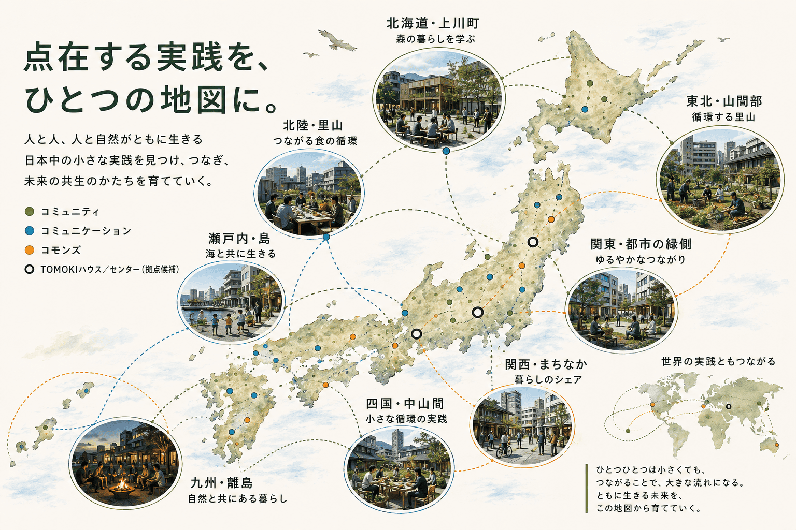
コミュニティ・コミュニケーション・コモンズの各分野で「ともに生きる」を実践する人々を訪ね、見える化していきます。"ともに生きる"のかたちを基準として言語化し、各地の実践を記録・紹介。その知見をメディアとして発信し、日本中の実践を、ひとつのデータベース（地図）にしていきます。
「ともに生きる」ことで一人ひとりが豊かに暮らす、その知恵を深め、探究します。行政機関・研究機関とも連携し、"ともに生きる社会"の実践と創造に向けた方策を、ともに探究していきます。
その営みは、やがて3つのかたちに結実していく
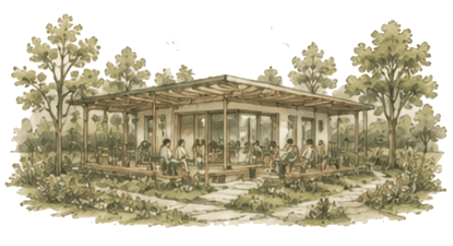
実際に「ともに暮らす」実践の場。人と暮らしが交わる、生きた拠点。
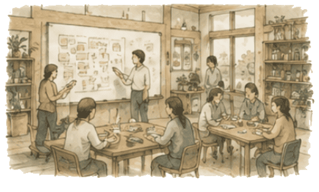
「ともに暮らす」を支える情報の拠点。知恵と事例が集まる場所。
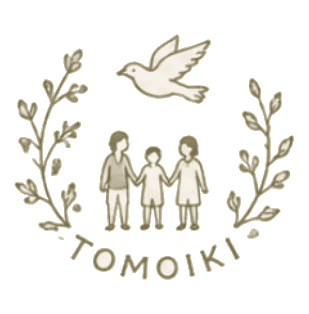
各地の実践を訪ね、記録し、紹介する。評価ではなく、いっしょに学び、分かち合うために。
私たちは、点在する実践をつなぎ、公助でも自助でもない——"共生・共助の文化"を、ともに育てていきます。
Members
関係性のプロフェッショナルを中心に、越境的なキャリアと専門性を持つメンバーが、それぞれの実践知を持ち寄り、この法人を立ち上げました。熟練の答えを持っているわけではありません。だからこそ、どの立場にも偏らない触媒・結び手として、「ともに生きる」の多様な実践を一つの地図に編んでいきます。ともに探究し、実践を広めていく。それが私たちのスタンスです。
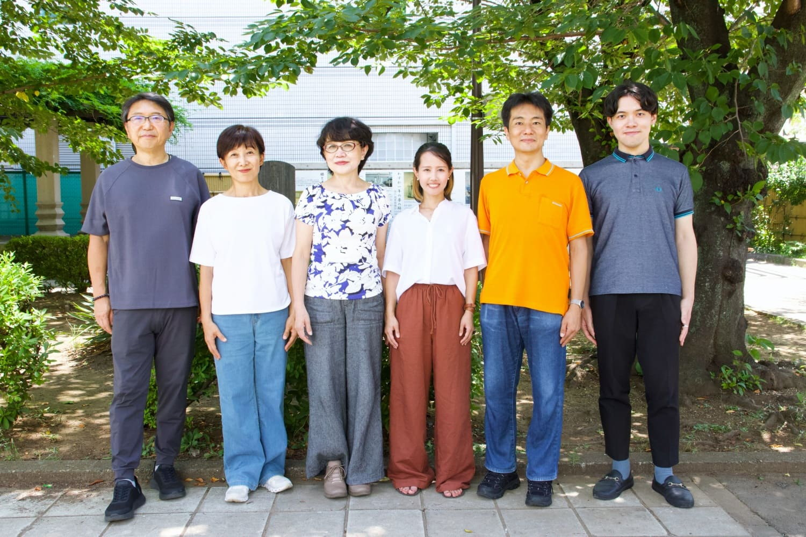
千葉南房総で夫・仲間とシェアハウスに暮らし、人生と仕事に境目のない生き方を実践。一人の想いからはじまる事業やプロジェクトを“いのち”と捉え、そのCallingを社会に届く形へ翻訳・編集し、実装することを理念とする。東証グロース上場のSaaS企業での事業推進、宝飾業界での外商、ソマティック心理学をベースとした対人支援での経験を糧に、プロジェクト共創・PM・翻訳/出版・コミュニティ運営・司会/MC・講師など、場も役割も越境して触媒的に活動中。ニュージーランドのエコ・ネイバーフッド「アースソング」の実践書『Cohousing For Life』の翻訳出版（No Limit出版）では訳者として携わり、ムーブメント推進のため本法人を設立。人と自然・地域が支え合う暮らしと共生文化の深化・実践を広げていくための活動を本格始動している。
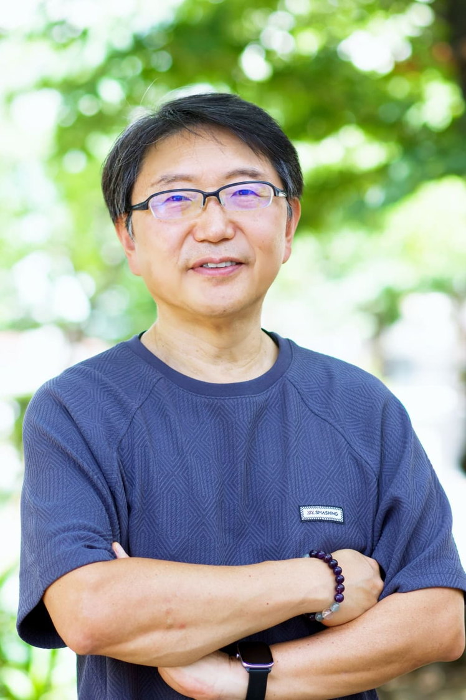
一般社団法人「ともに生きる実践ラボ」理事。組織心理学博士。ヒューマンエデュケア代表。長年にわたりプロコーチ養成、人材育成、対話の場づくりを通じた関係性改善、リーダーシップと組織開発に携わってきた人と関係性の専門家。子どもの不登校を契機に家族の生き方と暮らし方を見つめ直し、2018年から家族とともにニュージーランドへ移住。この経験を通じて、多様性を尊重し、互いに支え合うコミュニティの価値を実感した。人生の目的と社会への貢献を結ぶ「ビガーゲーム」の実践・普及をはじめ、コウハウジング、地域コミュニティ、縄文・アイヌの文化などを手がかりに、豊かな生き方を探究している。一人ひとりが自分らしさと自律性を保ちながら、世代や立場を超えて支え合える共助・共生社会を目指し、人と人、人と地域、人と自然を結ぶ「関係性の触媒」として、学びを実践へ、出会いを協働へと育てている。現在ニュージーランドと東京の2拠点で生活、活動中。
Yu-with-You代表。食品会社に就職し２度の育児休職を取りながら原料購買や事業採算、秘書などを経験。その後Co-Active Coachingに出会いコーチとして独立。2007年よりCTIジャパンにてコーチ養成に関わっている。コーチは「人が変化する瞬間」に立ち会える素敵な仕事で、天職だと思っている。子育てを通して時代の変化を感じる中で、便利さ・快適さを手に入れてきた代償として、人とのつながりを失い孤独を感じている人が多いことに心を痛めている。この先の新しい人間関係のあり方を模索していきたいと思い、この「ともに生きる実践ラボ」に参画。自助でも公助でもない共助・共生の社会をつくっていく輪を大きく広げていきたいと願っている。
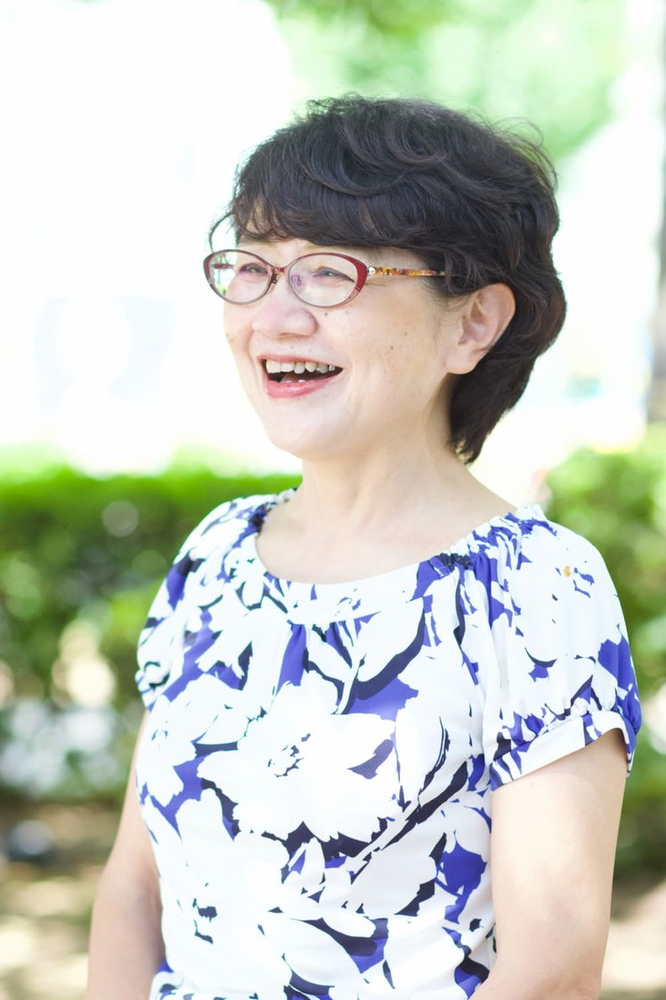
金融機関で、営業現場から組織運営、人財育成、ダイバーシティ推進など、さまざまな仕事を経験。仕事の傍らコーチングやカウンセリングを学び、「人の可能性を信じて関わる」ことの大切さを実感してきた。
現在は社外取締役として企業経営に関わる一方、「ともに生きる」社会のあり方を探究している。ジェロントロジーの学びにも触発され、人生のどの段階にあっても、誰もが自分らしく、その人らしい可能性を活かして生きられる社会を願っている。
一人ひとりが自立し、それぞれができることを持ち寄ることで、豊かな関係性や新しい支え合いが生まれる。「ともに生きる実践ラボ」を通じて、さまざまな学びや出会いを実践につなげ、そんな社会のあり方を仲間とともに探究していきたい。
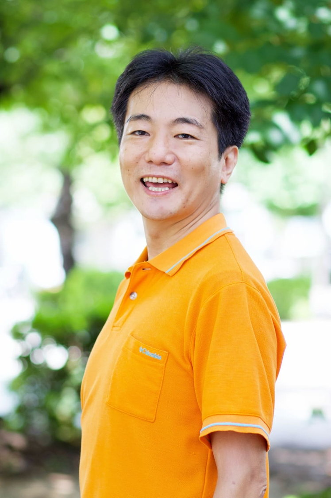
メーカーで商品の立ち上げから市場導入、広報まで携わり、専門家と力を合わせて価値を育てる経験を重ねてきた。協働の中で生まれる温かな関係性と、人が持つ可能性の広がりを実感してきたことが原点となっている。また、「人生の岐路に立つ人に、そっと背中を押すきっかけを届けたい」という思いからNPO法人の立ち上げに参画し、起業支援やキャリア形成プログラムを10年以上運営してきた。人が自分らしさを見つけ、前へ進む瞬間に寄り添うことを大切にしている。大切な人と食卓を囲む時間に幸せを感じるように、人と人が温かくつながることは日々を豊かにする力になると信じている。ともに暮らし、ともに生きる社会を育むため、仲間とともに一般社団法人「ともに生きる実践ラボ」を設立し、ゆるやかなつながりが芽生える場づくりを進めている。これから出会う皆さまと心地よい時間を重ねていけることを心より楽しみにしている。
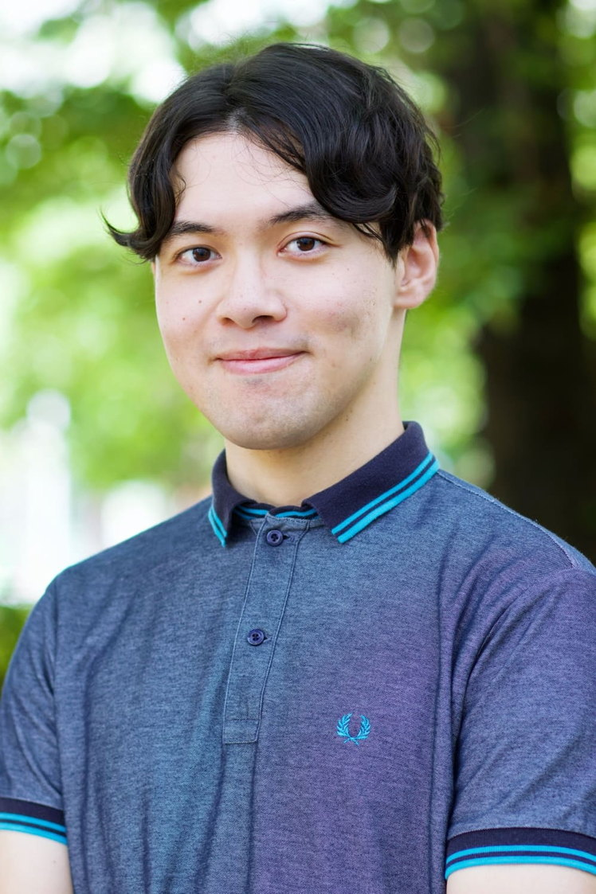
東京都の会計事務所で8年間、日系中小企業や外資系投資ファンドの会計・税務サポートを担当。その一方で、都内中心に各所で哲学対話・読書会を毎月開催している。旅先で生産現場のお手伝いをしたことをきっかけに、人と人・人と自然が相互に支えられながら”ともに生き”ていることを強く実感。人間の社会活動は貨幣価値のみで測られるのではなく、多様な価値観への想像力やケアの視点を広げることが、余白のある心豊かな社会をつくると信じている。その媒介者として、自分と他者の心にじっくり耳を傾ける対話の場をあちこちに設けることが目標。そして対話に留まらず、より深い共助・共生社会を仲間とともに探求するために、当法人に参画。モットーは”Feminism is for Everybody.”。現在は都市と地方の魅力的な取り組みを紹介しつなげるローカルライターになるべく勉強中。
専門・立場の紹介。
専門・立場の紹介。
The First Day
私たちは、2026年を「ともに生きる元年」と定めました。その幕開けを告げる、最初のご縁結び。
2026年10月10日（土）、「"ともに生きる"を探究する仲間と出会うトーキングセッション 〜これからの暮らし方、共生・共助の文化を共創する〜」を開催します。書籍『「ともに暮らす」の作り方』の著者ロビン・アリソン氏を、ニュージーランドから迎え、基調講演と対談をお届けします。
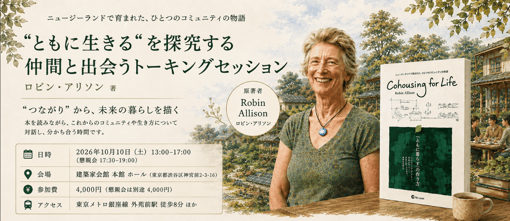
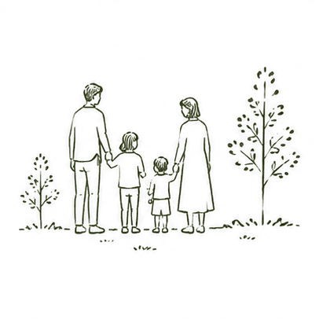
Join Us
Facebookグループから、書籍の刊行情報や活動のお知らせ、
著者であるロビン来日イベントの最新情報をお届けします。
“ともに生きる”世界への入口で、お待ちしています。